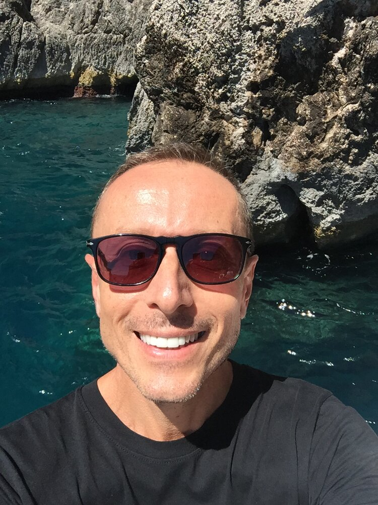
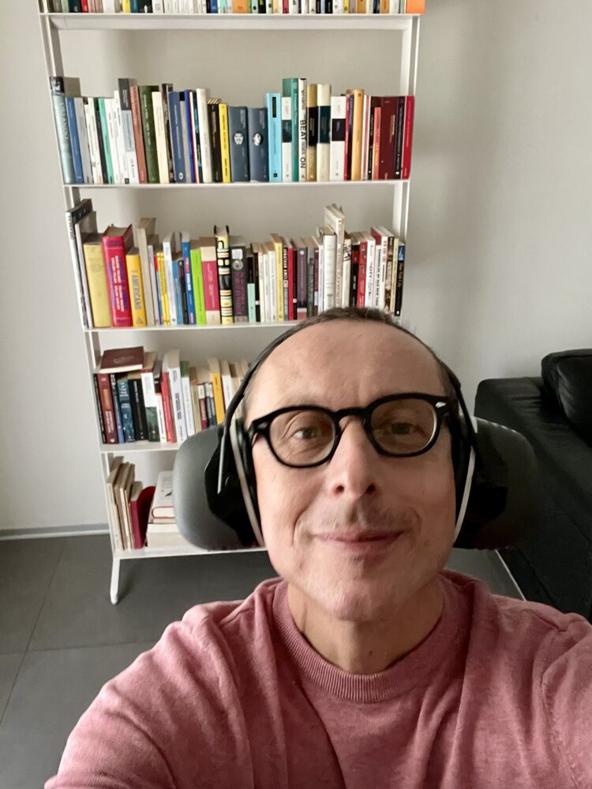
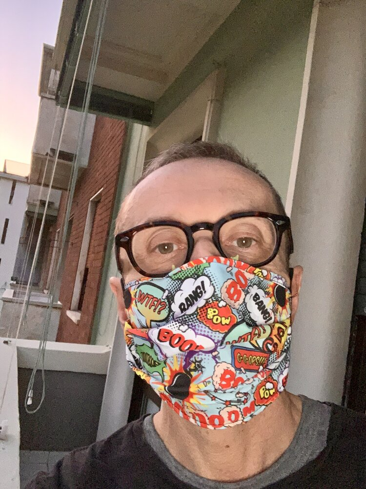
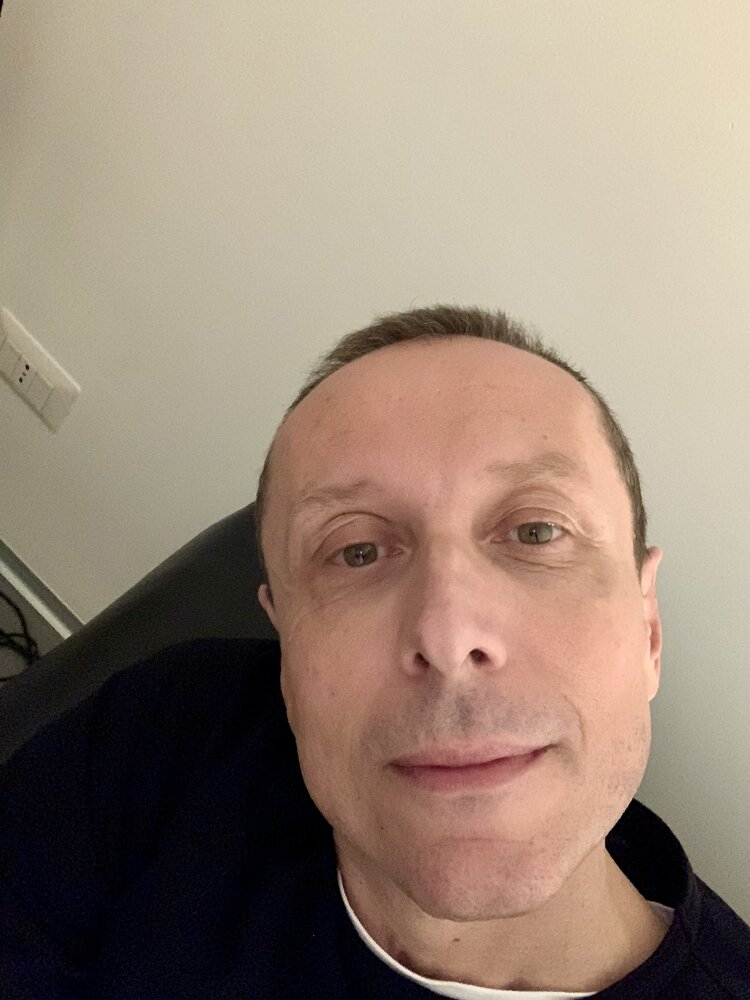
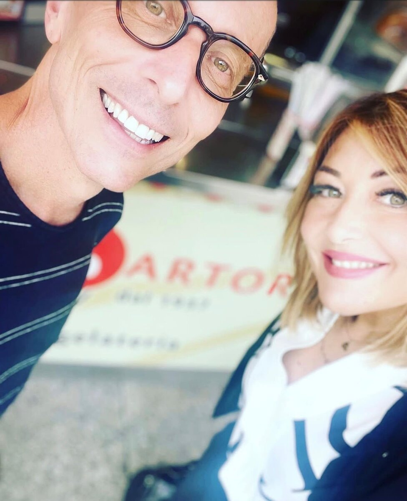
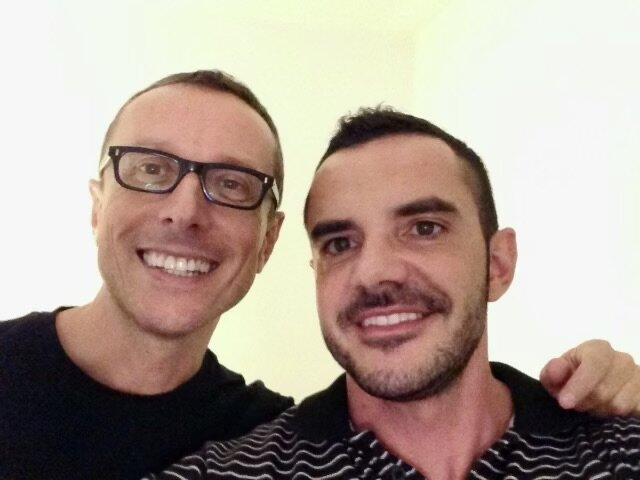

Ilaria
You were my dearest friend, and a piece of my soul has gone with you. Now fly free in the fragrant spaces of eternity.

We are truly like reeds in the wind. We are reeds, and fate is the wind.Grazia Deledda, Reeds in the Wind, 1913
It was the image Roberto cherished most, and made his own with a small consoling variation. Reeds that, so as not to be broken, lean on one another.
Roberto Pietro Guerrino was born on 13 July 1965. A conference interpreter, he lent his voice to that of others, interpreting heads of state and international audiences simultaneously, from the booth.
Of Ligurian roots, close to his mother and to the sea between Genoa and the rocks, he lived in Milan. A man of culture, he loved literature and the theatre. He was elegant but never pompous, and openly tender. Worldly on the surface, he held a deep Buddhist inner life. Those who knew him remember his curiosity about everything around him.
After a parliamentary interpreter's diploma at the school for interpreters in Milan, he graduated with honours from IULM University with a thesis on Fernanda Pivano, then specialised in American language and accent at the SPS (School of Professional Studies) of New York University.






"The garden of the Buddha."
Buddhism was the hidden centre of his life. At the Lama Tzong Khapa Institute in Pomaia he had taken the dharma name Konchog, attended retreats and celebrated Losar, the Tibetan New Year. Later he turned to Sōtō Zen, in the lineage of Taisen Deshimaru: on 30 September 2023, at a sesshin in Rome, he received the bodhisattva ordination with the name Sho Ken, “robust pine”, sewing his kesa by hand. From that path he drew a way of being in the world, able to accept what comes without struggling in vain.
He said it with disarming simplicity, even before the hardest trials. "As a Buddhist, I accept." In that surrender there was no resignation, but a form of freedom.
Death was no taboo for him: he spoke of it often, and with serenity. The book dearest to him was Marie de Hennezel’s «Intimate Death» (La morte amica), on accompanying the dying — in it he found that same clear acceptance.
A conference interpreter, member of AIIC and AITI, he knew the invisible effort of the booth and the discipline of grammar, which he cherished like a living thing.
He lent his voice to King Charles III, to Presidents Mattarella and Napolitano, to Mario Draghi and Mario Monti, to Henry Kissinger and Bill Clinton.
Yet he could also tell the human comedy of conferences with a writer's eye. From Montreux he described a colleague in a few lines.
"A French interpreter from Nice, old, ultra-chic, utterly original, with a fabulous American accent. Enormous Dior sunglasses and, of course, vertiginous heels. From the next booth came oriental scents."
He could make literature out of the everyday of his profession. He also taught interpreting, and gave seminars on Jack Kerouac and Fernanda Pivano, his American loves.
He was drawn to literature and theatre, and a certain cultured and eccentric Italy. These were among the figures dear to him.
He cultivated the beauty of details and of scents, and a vegetarian and macrobiotic table, out of respect for living beings.
He treasured Fernanda Pivano’s piece on Andy Warhol and Lou Reed — “He was so sweet and generous,” said Lou Reed — and would share it with those dear to him.
New York was the city of his heart, where he had been happy and fully himself, and where he had returned to study.
He adored the New York Christmas, made of small things. The same Feliz Navidad in every shop, the scent of pine trees in the streets, the Barnes and Noble cashiers who on Christmas Eve would shout "NEXT".
One return he dedicated to his mother, a way to break the spell and open himself to the world again.
Dea was his alter ego, red-haired. A playful, irreverent character, born of a Christmas night in New York.
He loved vegetarian and macrobiotic cooking but, as a good Genoese, never turned down seafood. And he had a great weakness for pastry sweets.
"Le canne al vento, che per non essere abbattute si adagiano le une sulle altre."
"Da buddhista accetto."
“Il resto della mia vita voglio trascorrerlo nei vicoli di Genova.”
“W la vita!”
“Vorrei trovare la mia essenza. Leggere.”
«La consapevolezza che trasforma, anziché sopprimere, l’energia del desiderio, ci libera dalla sofferenza.»
If you knew Roberto, you can leave a thought. We will receive it with care and may share it on this site.
You were my dearest friend, and a piece of my soul has gone with you. Now fly free in the fragrant spaces of eternity.
I will remember Roberto for his deep sensitivity. As a friend he supported me through hard times, with a kindness only a profound person could give. We also had great fun together. For years he was a true friend. I will carry him in my heart forever.
One word to describe him: fabulous. Always and in every way.